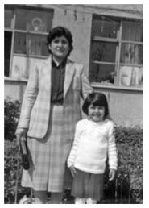

“Kızıma Bir Daha Kavuşamayacakmışım Gibi Bir His Vardı İçimde.”
Gülser Yavuz35
Eşimi 3 Ocak 2008’de ani bir kalp kriziyle kaybettim. 23 yıl 5 ay öğretmen olarak çalıştım. Daha sonra emekli oldum. Emeklilikten bugüne kadar da çalışma yaşamından kopmadım, şu anda engelli öğrencilerle çalışıyorum. Otizm üzerinde çeşitli kongrelere, toplantılara katılıp bu alanda kendimi geliştirmeye çalışıyorum.
Eşim ve ben, 12 Eylül Darbesi olmadan önce evlenmiştik. Ben Kars’ta öğretmendim. Tayinim 15 Ekim gibi eş durumundan İstanbul’a çıktı. Eşim de öğretmendi. İstanbul TÖB-DER’de devrimci öğretmen grubundaydı. 12 Eylül Darbesi’nin ilk günlerinde, gözaltına alınanlar, tutuklananlar oldu çevremizde. Eşimle aynı okulda çalışıyorduk.
İbrahim’in ilk gözaltına alınması, 1981 yılının Mart ayının son günlerindeydi. Maltepe Zırhlı Tugay’da sorguya alınan başka siyasetten birinin üzerinde, eşimin okul telefonu çıkmış. Bunun üzerine gelip okuldan almışlar. Eşimin alındığı gün ben raporluydum, okulda değildim. Kızıma hamileydim. Eşi gözaltında olan bir arkadaşım da bizimle birlikte kalıyordu. Alındığı günün akşamı, sık görüştüğümüz arkadaşlarımızın evinde olacaktık. İbrahim hariç hepimiz o akşam arkadaşlarımızın evine gittik. Eşim o gece eve gelmedi. Bir şeylerin ters gittiğini anlamıştık. Sabah okulu aradık. Okuldan gözaltına alındığını duyduk.
Eşimi okuldan alıyorlar. Ardından aynı gece bizim eve geliyorlar. Anahtar bende olduğu için içeri giremiyorlar. Beni evde bulamayınca eşime nerede olduğumu soruyorlar. Amcasına gitmiştir diyor. Amcam da Gaziosmanpaşa, Beşyüzevler’de yaşıyordu. Topkapı’da biraz bekliyorlar sonradan vazgeçiyorlar, onu da yarın alırız diyorlar. Eşimi de Tugay’a götürüyorlar. İbrahim o akşam bize katılmayınca biz de okula gidip gitmeme konusunda arkadaşlarla bir değerlendirme yaptık. Evimizde bizimle birlikte kalan arkadaşım, ısrarla okula gitmememi istiyordu. Seni alırlarsa, çocuğun tehlikeye girer diyordu. Çünkü o da hamileydi. Okula gitmeseydim, aranır durumda olacaktım. Bu durumu düşünerek okula gittim. Herhangi bir şey olmadı.
Eşim, Maltepe Tugay’da iki ay kaldı. Tugay’da gözaltında olan kişi ile siyasi bir bağı olmayınca serbest bırakılmış. Tugay’da ağır bir işkenceden geçtiğini biliyorum. Koşullar çok ağırmış. Geldiğinde çamaşırları bitlenmişti. Kızımın doğumuna yetişmiş oldu. Okulda da çalışmaya devam etti.
Bu arada öyle bir ortam var ki, tamamen ötekileştirilmişsin. Aileler tedirgin. Hiç unutmam, bir gün Bakırköy’deydik. Eşimi çok iyi tanıyan bir arkadaşı ondan nasıl kaçacağını bilemedi. İnsanlar tedirgin, bir panik söz konusu. Aranan arkadaşlarımızın durumu da aynı. Biz o dönemler zor durumda olan arkadaşlarımıza desteğimizi sürdürdük.
Okulumuz eve uzaktı, 3 araba değiştiriyorduk. Biz çalışırken kızıma kız kardeşim bakıyordu. 1983 yılının Nisan, Mayıs aylarıydı. Eşim, Yasemin’i köye gönderelim, onları yanımızdan uzaklaştırmamız gerekiyor, dedi. Çünkü 12 Eylül’ün sol üzerindeki baskısı son hızıyla sürüyor, o dönem evde kim varsa, çoluk çocuk, topluyorlar.
Yasemin’i kız kardeşimle birlikte köye götürdüm. Kızımdan ayrılmak çok zor oldu. Birbirimizden ilk defa ayrılıyorduk. Ona bir daha hiç kavuşamayacakmışım gibi bir his vardı içimde. Kız kardeşime: “Bize bir şey olursa Yasemin sana emanet, ona çok iyi bak” dedim. İstanbul’a döndüm. Çok kısa bir süre sonra okullar kapandı.
Eşim boş zamanlarında ek iş yapmaya başlamıştı. Cuma günleri semt pazarında çalışıyordu.
O tarihlerde maaşlarımızı okul mutemetlerinden, elden alıyorduk. 1 Temmuz 1983 Cuma günüydü. İkimizin maaşını aldım. 36 bin liraydı. Ertesi gün köye, kızımı almaya gidecektim. Eşim, semt pazarında çalıştığı için eve geç geldi. Saat 24:00. Henüz yeni yatmıştık. Evimiz giriş katı, cam tıklatıldı. Bekçi: “Kapıyı açın!”dedi. Kapıyı açtık. Silahlar üzerimize doğrultulmuş bir şekilde bizi duvara yasladılar. Evi aradılar, fazla kitap yoktu zaten, bir şey bulamadılar. Apar topar minibüse bindirdiler. Minibüste başka gözaltına alınanlar da vardı. Gözaltına alınan arkadaşlardan biri bizim evden saz alındığını görmüş. Metris’e geldiğimiz zaman söyledi. Serbest bırakılıp eve geldiğimde sazın olmadığını gördüm. Oysa ki saz benim değil, komşumun sazıydı.
O gece yapılan operasyonda 46 kişiyi toplamışlar. Operasyon yapılan birkaç eve biz de götürüldük. İnsanları kitaplarla birlikte tıkıyorlar minibüse. 1. Şube’ye geç saatlerde getirildik. Eşime: “Bize her şeyi anlat. Hemen eşini bırakacağız” diyorlar. Bana da: “Sen de her şeyi anlat. Seni bırakacağız” diyorlar. İstanbul’daki arkadaşları tanımıyordum. Şubede tanımış oldum. Bizi hücrelere attılar. İlk akşam bir divan üzerinde 5-6 kişiydik. Bir başka siyasetten bir arkadaş 17 gündür hücredeydi. Adını dahi söylememişti. Ondan sorgulamalar hakkında bilgi aldık. Ne yapmak istediklerini öğrenene kadar asla bir şey söylememek gerektiğini belirtti. Bu bana mantıklı geldi. Ben de öyle yaptım.
Uzun bir koridor var, ufak ufak, yan yana bir sürü hücre var, tam karşı tarafında da tuvalet. Hücre hemen kapanıyor. İçeride çok küçük bir divan var, divanın yarısı kadar da boşluk bir alan, orada tutuyorlar seni. İlk hücremizde 14 gün kaldım, hücre tamamen karanlık, gece mi gündüz mü hiç belli değil. Hücrede üçüncü günümüzde eşime işaretle bir şey söylemeye çalışırken, polis beni gördü ve dışarı çıkarıp tartakladı. Haberleşme de onlar görmeden havaya yazarak oluyor. Ertesi gün hemen sorguya alındık.
Sorguda istedikleri ifadeyi alabilmek için her türlü işkenceyi yapıyorlar. 12 Eylül’ün üzerinden 3 yıl geçmiş. Bu konuda epey tecrübe sahibi de olmuşlar. Ne söylersen, ne tavır takınırsan anlam çıkarmaya çalışıyorlar. Eşim ve ben sorguda, insanlık onurunu zedeleyen her türlü piskolojik ve fiziksel şiddete maruz kaldık. Benim de gözaltında oluşum eşimin durumunu daha da güçleştiriyordu.
Sorguya alınan tüm arkadaşlarımız ağır işkencelerden geçtiler. Bizler onlar için birer esirdik. Onlarsa bize her türlü işkenceyi yapmakta özgürdüler.
Sürekli dışarıdan peynir, kuru şeyler, ayran alıyorduk. Yoğurdun üst kapağını kaşık yaparak yiyorduk. Kaldık 38 gün; fakat 38 gün boyunca, bir ay hiç saçımızı, başımızı yıkayamadık. Üstümüz başımız dağınık, tarak yok. Tamamen esirsin. Tuvalete gidiyorsun, kapı açık, polis yanında. Onda bile kapıyı kapattırmıyorlar. 1 ay sonra bir polis gelmişti. O duş almamızı söylemişti. Bir de ben o zaman, öğretmen olduktan sonra spor kıyafet giymeyi tamamen bırakmıştım. Ayağımda etek, üstümde bir bluz var, tam bir öğretmen kıyafeti. Pantolon, eşofman giymeyi hiç düşünmedim, o anda düşünemiyorsun ya, hiç aklına gelmiyor. Normal kıyafetinle gidiyorsun. Bir ay boyunca o kıyafetlerle kaldım.
Hücrede tek başıma kaldığım günler de oldu. Alışmıştım. Her şeye rağmen insan yine de yaşama tutunuyor. Unutamadığım anlardan biri de hücrede üzüm yememizdir. Temmuzun ortası. Hücrede 2-3 kişiyiz. Rap diye önümüze üzüm düştü. O kadar şaşırmıştık ki. Meğerse üzümü yan hücreye yeni gelen biri atmış.
Şubede kaldığım sürede kızım için o kadar tedirgin oluyordum ki çünkü ilk defa bırakıyorum. Yasemin 2 yaşında. Bir de bizim evin bahçesi biraz taşlıktır, yüksektedir, eyvah diyorum o taşlara düşmüşse, ay bir yerine bir şey olmuşsa, hep aklımda kızım var. Beni en çok sıkıntıya sokan kızımdan ayrı olmamdı. Kızıma ailem bakıyor ama onlar da nereye gittiğimizi, ne yaptığımızı bilmiyorlar.
Maaşımız Ortadan Kayboluyor
Şubeye geldik ki paralarımız yok. Maaşlarımızı küçük bir çantaya koymuştum. Şubeye getirilirken kimliklerimizi, özel eşyalarımızın hepsini büyük bir çantaya koymuşlar ama paralar ortada yok. Paralar bulunmazsa savcılığa bildireceğimi söyledim. Çünkü şubede yemek verilmiyor, her şeyi kendi paranla alıyorsun, ne yiyip içeceğiz? Neyse ki maaşını yeni alan bir arkadaşım şubede kaldığımız sürece masrafları karşıladı.
Şubeden çıkmaya bir hafta kala beni çağırdılar. Polisler “Parayı içimizden birinin alıp almadığını tespit edemedik. Bu paranın 30 bin lirasını al” dediler. Ben de savcılığa aksettirmedim.
Şubeden ayrılırken ihtiyacı olan arkadaşlara o paradan verdim. Şubede 38 gün kaldık. Ayrılırken beni sorguya alan polis: “Hakkında çok küçük bir şey bulabilsem, seni en az bir yıl yatırtacağım” dedi.
Şubeden sonra muayene için doktora götürdüler, sağlam raporu veriyorlar. Muayene olduktan sonra kadınları Metris’e, erkekleri Selimiye’ye götürdüler. Metris’e gitmek de ayrı bir olay. Metris’e gidince, üzerimizdeki giysiler çıkarttırıldı. Sadece iç çamaşırlarımızla kaldık. Arama öyle yapılırmış. Kaç kapıdan geçtik bilmiyorum. Bu da bir tür işkence tabii.
Mahkemeye çıkana kadar bir hafta Metris’te kaldık. Metris’e gittiğimizin ertesi günü görevli yüzbaşı hepimizi tek tek çağırdı. Neden geldiğimizi sordu. Eşimden dolayı gözaltına alındığımı, öğretmen olduğumu, eşimin de öğretmen olduğunu söyledim. Mahkemede bırakılacağım, ben çıkacağım, dedim. Bizi dinleyen kadın polislerden biri: “Öğretmen Hanım! Gazeteler sizinle ilgili o kadar şey yazdı ki, nasıl çıkacaksın?” dedi. Ben de bunun üzerine: “Gazeteler yazsın. Ben çıkacağım” dedim. Şubede olduğumuz zaman toplu bir şekilde televizyonda gösterildik. Milliyet, Hürriyet, Tan gibi gazeteler en az 10-15 yıl yatacaklar diye manşet atmışlar. Gazetelerde fotoğraflarımız yayımlandı. Gözaltına alınışımız gazetelerde yer alınca, ailelerimiz nerede olduğumuzu öğreniyor. Ailem ilk zamanlar tatile gittiğimizi sanmış. Basında yer almamız aile çevremizi çok sarstı haliyle.
15 Ağustos 1983, mahkemeye çıkacağız. Selimiye’ye getirdiler. Ellerimiz kelepçeli. Yazın sıcağı... Üzerimizdeki giysiler terden sırılsıklam olmuş. Yemek yerken bile ellerimizi çözmediler. Verdikleri yemek konserveydi. Mahkemeye çıkarıldık. Ben salıverildim, 7 kadın arkadaştan bir kişi tutuklandı. Eşim de tutuklandı.
Metris’e tekrar geri getirilecektik. Ertesi gün serbest bırakılacaktık. Kadın polis niye bırakıldık diye elimize öyle bir kelepçe vurdu ki Selimiye’den Metris’e gidene kadar tam bir işkence oldu o bize. Metris’e geldik ama hâlâ ellerimizi çözmüyor, çayını içiyordu. Ayağı aksayan başka kadın polislerden biri: “Sizin ellerinize ne olmuş böyle?” dedi ve ellerimizi çözdü. Tutuklanan kadın arkadaşlar Metris’e, erkek arkadaşlar Selimiye’ye götürüldü.
Ertesi günü serbest bırakıldık. Serbest kalır kalmaz okuluma gittim. Tayinimizin evimizin çok yakınına çıktığını öğrendim. Hiç vakit kaybetmeden tayinimi evimin yakınındaki okula aldım.
Kızımı çok özlemiştim. Hemen köye kızımın yanına gittim. Kızım beni unutmuştu. Anneme “anne” diyordu. O anı hiç unutamam. Ona aldığım hediyeleri verince, annem gelmiş diyerek boynuma sarıldı, benden hiç ayrılmadı.
Köyde bir akrabamızın düğünü vardı. Düğüne gittim. Bütün gözler üzerimdeydi. O bakışları da asla unutamam.
Köyde fazla kalmadım. Kız kardeşimi yanıma alarak İstanbul’a döndüm. Okullar açılmıştı. 1. sınıfı okutacaktım. Gözaltına alındığımız Milli Eğitim Müdürlüğü’ne bildirilmiş, eşimle ikimizi de açığa aldılar. Maaşlarımız kesintiye uğradı, normalde aldığımızın 2/3’ünü ödüyorlardı. Ekonomik sıkıntılar yaşadık ama o yıl açıkta olunca cezaevi ziyaretlerine daha rahat gittim. Eşim bir süre sonra Selimiye’den Sultanahmet’e getirildi.
O süreçte tutuklular, tek tip elbise giymeye zorlandılar. Tutuklular kabul etmedi. Açlık grevleri başladı. Eşimin tutuklu olduğu dönemde bir kere Selimiye’de bir kere de Sultanahmet’te görüşebildim. Görüş yasağı getirildi. Eşim belli bir süre sonra Sağmalcılar Cezaevi’ne getirildi. Bazı siyasi gruplar ölüm oruçlarına başlamıştı. Ölüm oruçlarından 4 kişi hayatını kaybetti.
Cezaevinde yaşanan durumlar karşısında cezaevi önünde ailelerle birlikte ne yapmak gerekir diye konuşur, tartışırdık. Yakınları 1980’den beri cezaevinde olanlar vardı. Biz cezaevi ile 1983’te tanıştık. Ailelerle iletişimimiz devam ediyordu. Tabii diğer ailelerle tanışıyorsun, onlarla paylaşıyorsun. Haftada bir cezaevi önüne gidiyordum. Çok zorlu bir süreçti. Tutuklular tek tip elbise giymeyi asla kabul etmediler. İçeriye iç çamaşırı ve pijama harici kesinlikle başka giyecek alınmıyordu. Mahkemeye bile şortla gidiyorlardı. İçeridekiler çok kötü koşullarda yaşıyorlardı, dışarıdakiler de bir şey yapamamanın paniği içerisindeydiler. Bu şekilde 18 ay yattı İbrahim. Tabii insanlar çok diyetler ödediler.
Bu süreçte en büyük desteği dava avukatlarımız, Kemal Keleşoğlu, Erhan Erel, Sedat Küçükyılmaz’dan gördük. En sıkıntılı anda sorunumuzu çözen güvendiğimiz kişiler, dava avukatlarımızdı.
Bu süreçte ailemden ve eşimin ailesinden destek aldım. Komşularım, ev sahibim çok anlayışlıydı. Her zaman yanımda oldular.
Kızım babasını unutmuştu. Dışarıda gördüğü tanımadığı erkeklerin arkasından “Baba!” diye bağırırdı. Akrabalarımızdan amcaları geldiği zaman onların kucaklarından inmezdi. Komşulara gittiğimiz zaman, onlar da kendi çocukları ile ilgilenmez, kızımla ilgilenirlerdi.
Açıkta kaldığım, maaşımın kesintiye uğradığı o yıl ekonomik sıkıntılar içindeydim. Ancak zar zor kirayı veriyorsun, sadece yılbaşında bir tavuk aldığımı bilirim et adına, ama Yasemin’in meyvesini haftalık alırdım. Kardeşime derdim ki, çocuğun en azından meyvesini eksik etmeyelim de vitaminsiz kalmasın. Kızımı mağdur etmemeye çalıştım.
1984 yılının yaz tatilinde kayınvalidem rahatsızlandı. Eşimin köyüne gittim. Onlara her konuda yardımcı olmaya çalıştım, moral vereyim istedim, oğulları içeride, daha panikteler.
Köydekiler; kendi aile çevrem ve eşimin çevresi, ailesi çok yıprandı çünkü farklı değerlendiriliyor. Kayınpederimin ve kayınvalidemin çok etkilendiğini biliyorum. Ama İstanbul’da olduğum için, komşularımla, okul çevresinden yine tanıdığım arkadaşlarla hep birlikteydik. Onlarla birlikte sorunlarımızı çözmeye çalışırdık. Ama memlekette olmuş olsaydım bayağı bir tedirgin olurdum. Çünkü bakışlar, sözler, bunu malzeme yapan çok insan çıkar. Ama tatillerde kendi köyüme gittiğim zaman, eşimin köyüne gittiğim zaman insanların o bakışlarını çok iyi hatırlıyorum.
İddianamenin hazırlanması bir yıl sürdü. Hakkımda koğuşturmaya gerek olmadığı kararı çıkınca 1 Eylül 1984 yılında göreve döndüm.
Cezaevi koşullarında bir değişme yoktu. Çalışırken izin alarak veya sabahçı, öğlenci diye ayarlayarak görüşmelere gidiyordum. açlık grevleri ve tek tip elbise uygulamasından dolayı tamamen görüş yasağı vardı, dolayısıyla görüşemiyorduk ama en azından aileler olarak cezaevi önünde toplanıp birtakım gelişmeler hakkında bilgi ediniyorduk.

İbrahim, Gülser, Yasemin, Doğuş Yavuz
İbrahim Çıkıyor
Eşim, 1984 yılının Aralık ayının son günlerinde mahkemeye çıktı ve tahliye oldu. Dava devam ediyordu. 1986 yılında beraat etti ve göreve döndü. 1 yıl kadar çalıştı. Aynı zamanda serbest işler yapıyordu. Her iki işi birlikte yürütemeyeceğini anlayınca istifa etme kararı aldı.
İstifa dilekçesini vermeye gittiğinde, Eskişehir’e sürgünü çıktığını öğrendi. İstanbul’dan ayrılmayı düşünmediğimiz için istifa etmesi isabetli bir karar oldu.
İçeriden çıktığı o günlerde eşim, yol boylarında karpuz sattı. Semt pazarlarında çalıştı.
Halkevi’ni ve Eğit-Der’i Kuruyoruz
1980’lerin sonlarına doğru birçok insan cezaevinden çıkmış, işsiz güçsüz, sıkıntılı. Herkes bir taraflara savrulmuş. Halkın gözünde ötekileştirilmişsin.
Her ne kadar zor süreçlerden geçmiş olsak da bizlerde yılgınlık olmadı. Yine bir araya gelince, birçok şeyin olabileceği fikri doğdu.
Eşim, 1980 öncesi Marmara Bölgesi Halkevleri sorumlusuymuş. Bir grup arkadaşı ile 1987-88 yıllarında Bakırköy Halkevi’ni açtılar. Başka şehirlerde de Halkevleri açıldı. Bakırköy Halkevi’nin açılması, sola derin bir soluk aldırdı. Solda herkes Bakırköy Halkevi’ne geliyordu. Çeşitli faaliyetler düzenlendi; seminerler verildi, folklor çalışmaları yapıldı, pikniklere gidildi.
Bu arada öğretmen örgütlenmeleri gündeme geldi. Çalışmayan öğretmenler Eğit-Der’i kurdu. Eşim de çalışmayan öğretmen olarak Eğit-Der çalışmalarında bir grup arkadaşıyla aktif olarak yer aldı.
Bizler de çalışan öğretmenler, Eğit-Der’in fahri üyesi olduk. Çalışanların örgütlenme hakkı yoktu. İlk zamanlar Eğit-Der’in çalışmaları Halkevi’nde yürütüldü. Geniş öğretmen kitlesine Eğit-Der’i tanıtmak kolay olmadı.
İstanbul ilçelerinde İlk-San seçimleri yapılıyordu. İlçelerdeki seçimlere Eğit-Der olarak katılma kararı aldık. Öğretmenler Eğit-Der’i tanımıyordu. Bakırköy ilçesi Kartaltepe İlkokulu’nda yapılan İlk-San seçimlerinde sabahtan akşama kadar tek tek insanlara Eğit-Der temsilcisini desteklemelerini söylüyorduk. İnsanlar Eğit-Der’i dergi sanıyorlardı. Dernek kurulduğunu söyleyince seviniyorlardı.
İlk defa İlk-San seçimlerinde Eğit-Der’i anlattık, tanıttık. Seçimleri Eğit-Der temsilcisi kazandı. Şiarımız Eğit-Der’den Eğit-Sen’e geçiş şiarı, öğretmenlerin sendikalaşması.
1982 Anayasası’nda memurların sendika hakkı yok. Ancak sendikaları yasaklama ibaresi de yok. Memurlar sendika kurma çalışmalarını anayasanın bu boşluğundan yararlanarak başlattı.
İstanbul Eğit-Der şubesi Aksaray’daydı. Ahşap, çok eski bir binaydı. Eğit-Der’de sendikal haklar komisyonları oluşturuldu. Yurdun dört bir yanında örgütlenmelere hız verildi. Eşim, Eğit-Der’deki örgütlenmenin sağlam temellere dayanması noktasında çok çaba sarfetti.
Eğit-Der’deki Eğit-Sen çalışmasının örgütlenmesi büyük bir özveriyle yapıldı. Alınan kararlar hemen hayata geçiriliyordu. Bir basın açıklaması olduğunda, bir kişi gelmezse niye gelmediğini o kişiye çok rahat sorardık. Bizim devrimci öğretmen grubumuz dışındaki diğer gruplar da aynı duyarlılığı gösterdiler, sürece destek verdiler.
İlk basın açıklamasını hiç unutamam. Oğluma 1-1,5 aylık hamileydim. Memurlar 12 Eylül’den sonra ilk basın açıklamasını, 18 Ağustos 1990 yılında, Cağaloğlu’dan Sirkeci’ye yürüyerek gerçekleştirdi. İstanbul’da ilk memur mitingi Gaziosmanpaşa’da oldu. Miting sonrası saldırıya uğradık, polis yine bizi duvarlara yapıştırdı. Hiç unutmam bir ayakkabıcıya sığınmıştım.

Gülser Yavuz Yasemin’le birlikte
Ağırlıklı olarak İstanbul, Ankara, İzmir gibi yurdun çeşitli yerlerinden sendika kuruluş evraklarını gönderen 333 kişi Eğit-Sen kurucusu oldu. Ben de Eğit-Sen kurucuları arasında yer aldım. Gayriresmi sendika kurultayını İstanbul Ümraniye SHP binasında yaptık. 13 Kasım 1990 yılında Eğit-Sen’i kurduk. Genel merkez İstanbul’du. Sendika kurulduktan 3 ay sonra oğlum doğdu. Adını Doğuş koydum. Anlamı sendikamızın doğuşuydu.
12 Eylül’ün baskıcı tutumuna rağmen biz sendika kurmayı başardık. Var olduğumuzu gösterdik. 1995 yılında Eğit-Sen, Eğitim-İş ile birleşerek Eğitim-Sen adını aldı.
Aile Ortamı
Bizim evimiz, çocuklarımın tabiriyle siyaset meydanı gibiydi. Eşimle sürekli gündemi değerlendirirdik, sendika çalışmaları içerisinde olduğum için, ev sürekli siyasetin konuşulduğu bir evdi. Cezaevi anılarını birine anlatırken bir şekliyle oğlum ve kızım duymuştur. Eşim çocuklarına çok bağlıydı. Kızım üniversiteye giderken başına bir şey gelir mi diye tedirgin olurdu. Çok hassastı. Çocuklarına bağlıydı. Bizi hiç bırakmazdı, hep beraber gezerdik.
Sendika çalışmalarının yoğun yürütüldüğü dönemlerde oğlum küçük olduğu için, kızımı ihmal ettim. Kızımın ergenlik dönemlerinde onunla ilgilenemedim. İlgilenmeyi bırak, ondan destek alıyordum. Çok önemli toplantım ya da mitinge gittiğim durumlarda kardeşini baktırdığım oldu. Kızımın bana tepkili olduğunu biliyorum. Bu benim eksikliğim. Keşke kızıma daha fazla zaman ayırabilseydim.
Umutlarım, Tasalarım, Kaygılarım
Darbe benden ne aldı, Darbe benden o en güzel gençlik yıllarımı aldı, 25 yaş, o yıllarımı aldı götürdü. Bomboş bir hayat meşgalesine soktu beni. Hayatımı bir boşluğa itti. Bana verdiği ne olacak, ben İstanbul’u tanımıyordum, o zaman çok üstüme geldiler, sen her şeyi biliyorsun diye, dedim ki bu insanları tanımıyorum, bilmiyorum. Onun için daha fazla sarıldım işe. Az az dedim, daha fazla bir şey yapmak lazım bunların karşısında. Daha dirençli yaptı beni, daha üretken yaptı. Keşke şunu da yapmasaydık diye düşündüğüm hiçbir şey olmadı. Açıkçası eşim çıktıktan sonra kendi aramızda bir adaptasyon sorunu veya o tür keskin çelişkiler de olmadı. O içerideydi, ben dışarıdaydım ama biz işin bilincinde olduğumuz için onu aşabildik. Bizim aramızda o anlamda zorluk olmadı.
12 Eylül sonrası yaşananlardan ders çıkarıp solun daha derli toplu olmasını beklerdim. Solu darmadağınık olan bir ülkenin geleceğinden, endişe etmemek elde mi? Bugün yaşananlar apaçık ortada.
Şu an emekliyim. Sendika çalışmalarını dışarıdan takip ederim. Siyasi alanlarda çalışmalarıma devam ediyorum. Güzel günler, aydınlık günler için hiç umudumu yitirmedim.
12 Eylül Davası
Bu davadan vicdanları rahatlatacak kararlar çıkacağını sanmıyorum. 12 Eylül ürünü olan partiler nasıl hesap sorabilir? Bu bana pek inandırıcı gelmiyor.
35 1959 doğumlu. Emekli öğretmen. Eşi İbrahim Yavuz’dan dolayı sorguya alındığında 24 yaşındaydı.